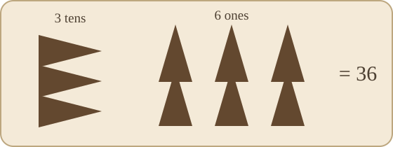
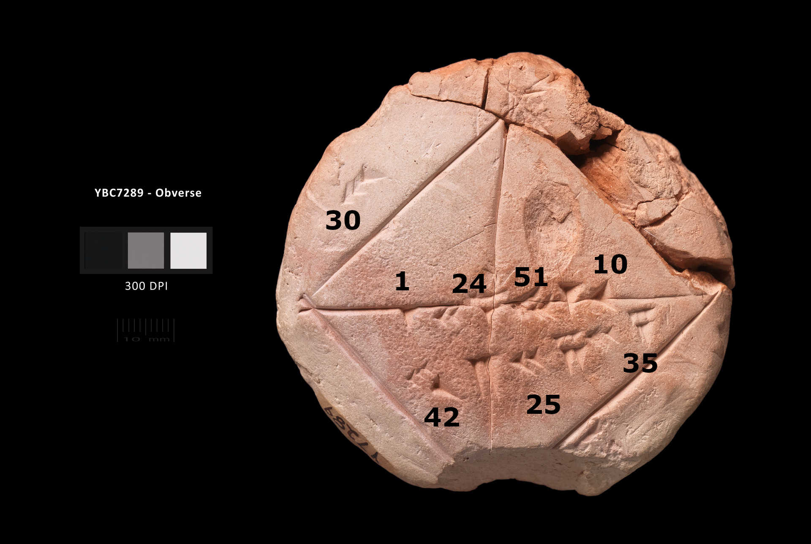

The land between the rivers
Our first extended mathematical tale took us to Egypt, a civilization shaped by the Nile. Now we travel east to another river valley: the broad plain between the Tigris and Euphrates. The Greeks later called this region Mesopotamia, literally “the land between the rivers.” Much of it lies in modern Iraq.
Like the Nile Valley, Mesopotamia offered fertile soil and water for irrigation. Unlike Egypt, however, it was not protected by deserts on every side. The open plain was crossed and conquered repeatedly. Sumerians, Akkadians, Babylonians, Assyrians, and other peoples succeeded one another, but they did not simply erase everything that came before. Languages and rulers changed; scribal practices, administrative habits, religious stories, and mathematical techniques were adopted, adapted, and passed along.
This makes the word Babylonian slightly misleading when we use it to describe mathematics. We are not always speaking about one people in one short historical period. We are speaking about a long mathematical tradition preserved in Mesopotamian clay tablets, especially during the Old Babylonian period, roughly the first half of the second millennium BCE.
The region is often called a “cradle of civilization.” That phrase can sound grand and vague, so let us be more specific. Here we find some of the earliest cities, governments, tax records, written laws, and sustained traditions of writing. We also find records of astronomy, medicine, engineering, accounting—and mathematics.
Perhaps mathematics did not begin with philosophers gazing at the stars. Perhaps it began with someone trying to keep track of grain, livestock, land, workers, debts, and taxes. Bureaucracy may not be romantic, but it is very good at producing records.
From pictures to wedges
Early Mesopotamian writing grew from pictorial signs. But the material used for writing changed the appearance of those signs. Egyptian scribes could draw curved forms with ink on papyrus. Mesopotamian scribes usually pressed a cut reed stylus into soft clay. Pressing the stylus produced small wedge-shaped marks; drawing graceful curves in clay was inconvenient.
Over time the pictures became collections of wedges, and the original objects were no longer recognizable. This writing is called cuneiform, from the Latin cuneus, meaning “wedge.” Cuneiform is not a language. It is a writing system that was used for several languages, just as the Roman alphabet is now used for English, French, Turkish, and many others.
Clay had disadvantages. A tablet was usually small, and the scribe needed to finish before the surface dried. Yet clay gave Mesopotamian history an enormous advantage: a baked tablet is remarkably durable. Papyrus decays or burns; clay often survives the destruction of the building around it. Hundreds of thousands of tablets have been recovered, including several hundred tablets or fragments with mathematical content.
Clay beats papyrus in the game of “clay, scissors, papyrus.”
Reading the unreadable
For many centuries, no one could read these wedge marks. The road to decipherment is a mathematical story of its own: identify patterns, propose a hypothesis, test it, revise it, and use the pieces already understood to attack the unknown.
At the beginning of the nineteenth century, the German schoolteacher Georg Friedrich Grotefend studied copies of inscriptions from Persepolis, the ceremonial capital of the ancient Persian Empire. The inscriptions repeatedly named Persian kings and their ancestors. Grotefend reasoned that recurring groups of signs might mean “king” or “king of kings,” and that nearby groups might be royal names. By comparing these patterns with the known succession of Persian rulers, he identified Darius, Xerxes, and several cuneiform signs. His work contained errors, but the central idea was right.
The decisive evidence came from the great inscription at Behistun, carved high on a cliff in present-day Iran by order of Darius I around 520 BCE. It tells of Darius’s victories in three languages—Old Persian, Elamite, and Babylonian—written in cuneiform scripts. It is often compared with the Rosetta Stone, although the comparison is imperfect: none of the three Behistun versions was initially written in a familiar script.
Henry Rawlinson, a British army officer and diplomat, copied the inscription at considerable personal risk. Some portions lay hundreds of feet above the road. Working from the relatively simple Old Persian version and using proper names as anchors, Rawlinson and other scholars gradually opened the way to reading Babylonian cuneiform.
It is worth pausing over this. The tablets did not explain themselves. Everything we say about Babylonian mathematics rests on the combined work of excavators, linguists, historians, and mathematicians—and sometimes on educated disagreement among them.
A positional system with base sixty
The Babylonian number system used only two basic numerical signs: a narrow vertical wedge for one and a broader sideways wedge for ten. These signs were repeated and combined to write the numbers from 1 through 59.
At first glance, that sounds like an additive system rather like Egyptian numerals. Within a single group it was additive: three ten-wedges and six one-wedges represented 36. But the groups themselves were positional. Their value depended on where they appeared.

Our decimal system uses powers of ten. In
\[ 357=3\cdot10^2+5\cdot10+7, \]
each step to the left multiplies the place value by 10. The Babylonian system instead used powers of 60. Using commas to separate sexagesimal places, we can write
\[ (2,3,50)_{60} =2\cdot60^2+3\cdot60+50 =7430. \]
The notation with commas and the subscript 60 is ours, not theirs. It allows us to discuss their numbers without repeatedly drawing wedges.
Why is positional notation such a powerful idea? A small collection of symbols can represent numbers of any size. No new symbol is needed for a thousand, a million, or a billion. Position does the work.
Pause and try
Convert the following sexagesimal numbers to decimal:
\[ (1,1)_{60},\qquad (1,1,5)_{60},\qquad (1,2,3)_{60}. \]
For example,
\[ (1,1,5)_{60}=1\cdot60^2+1\cdot60+5=3665. \]
Now consider a larger number:
\[ (12,23,38,59)_{60}. \]
Its decimal value is
\[ 12\cdot60^3+23\cdot60^2+38\cdot60+59=2,677,139. \]
Notice how quickly the place values grow: \(1,60,3600,216000,\ldots\).
Traveling in the other direction
To express 7820 in base 60, we can first find the largest useful power of 60. Since
\[ 60^2=3600, \]
we have
\[ 7820=2\cdot3600+620 =2\cdot3600+10\cdot60+20. \]
Therefore,
\[ 7820=(2,10,20)_{60}. \]
Repeated division gives the same answer:
\[ \begin{aligned} 7820&=130\cdot60+20,\\ 130&=2\cdot60+10,\\ 2&=0\cdot60+2. \end{aligned} \]
Reading the remainders from bottom to top gives \((2,10,20)_{60}\).
This is not a special Babylonian trick. It is the general method for converting a whole number from decimal to another base.
The empty-place problem
The early Babylonian system had a serious weakness: it had no symbol for an empty place.
Suppose one group contains a single wedge and the next contains signs for 24. Does this mean
\[ 1\cdot60+24=84, \]
or
\[ 1\cdot60^2+0\cdot60+24=3624? \]
A visible gap might indicate the missing middle place, but a gap is fragile. A copyist can overlook it. Spacing varies. Context must decide.
By the late first millennium BCE, scribes sometimes used a special placeholder between groups. That was an important step toward zero, but it was not yet our zero. The placeholder was not consistently used at the end of a number, and it was not treated as a number that could be added, subtracted, or multiplied.
This distinction matters. A placeholder keeps positions from collapsing. The number zero represents a quantity and participates in arithmetic. Humanity learned these two ideas at different times.
Even with an internal placeholder, the Babylonian notation was not absolute. A written group such as \((2,24)\) might mean
\[ 2\cdot60+24=144, \]
but it might also mean \(8640\), or \(2+24/60=2.4\). The relative place values were clear; the location of the “sexagesimal point” often had to be supplied by context—rather as we might infer whether “three fifty” means $3.50, 3:50 p.m., or 350 from the conversation.
Why sixty?
We do not know with certainty why 60 became the base. Many explanations have been proposed.
The most attractive mathematical fact is that 60 has many divisors:
\[ 2,3,4,5,6,10,12,15,20,30. \]
This makes common fractions easy to express. In sexagesimal notation,
\[ \frac12=0;30,\qquad \frac13=0;20,\qquad \frac14=0;15,\qquad \frac15=0;12. \]
Here the semicolon plays the role of a sexagesimal point. Again, it is a modern convention introduced for clarity.
Compare this with decimal notation. One third becomes the repeating decimal (0.3333), but in base 60 it terminates immediately. Fractions whose denominators contain only factors of 2, 3, and 5 have terminating sexagesimal expansions. This was wonderfully convenient for measurement, commerce, and astronomical calculation.
Other proposed explanations connect base 60 with older counting systems or with a merger of decimal and base-six practices. It is tempting to offer one clever origin story, but the evidence does not allow certainty. Historical honesty sometimes requires the sentence: We do not know.
We do know that sexagesimal notation had a very long afterlife. We still divide an hour into 60 minutes, a minute into 60 seconds, and a circle into 360 degrees. When you say “two hours, ten minutes, and twenty seconds,” you are effectively reading a sexagesimal numeral.
Mathematics for people who needed answers
Mesopotamian scribes produced tables of multiplication, reciprocals, squares, cubes, and other useful values. They calculated areas and volumes, divided inheritances and rations, measured fields, and computed interest on loans. They solved problems that we would translate into linear and quadratic equations.
But they did not write symbolic algebra in our manner. We might begin:
\[ 2x+10=50. \]
Then we subtract 10 from both sides and divide by 2. A Babylonian text would state a procedure in words: take away 10 from 50; take half of what remains; the result is 20.
Calling this “rhetorical” or “procedural” algebra does not make it primitive. The reasoning is algebraic even when the symbol \(x\) is absent. The notation we use today compresses and generalizes the procedure, but the underlying reversible operations are the same.
This is a recurring warning in the history of mathematics: do not confuse unfamiliar notation—or the absence of our notation—with the absence of mathematical thought.
Plimpton 322: a tablet without instructions
One of the most famous mathematical tablets is known as Plimpton 322. The name is not Babylonian. George Arthur Plimpton purchased the tablet in the twentieth century, and it later became item 322 in his collection at Columbia University.
The tablet was written around 1800 BCE. It is small, damaged along one edge, and contains fifteen rows of numbers arranged in columns. It does not contain a preface saying, “This is a table of right triangles.” It gives no proof and no explanation of its purpose.

That makes it an ideal invitation to think like a historian of mathematics.
The mathematician R. Creighton Buck called this kind of reconstruction “Sherlock Holmes in Babylon.” Like a detective, the historian begins with incomplete clues, looks for patterns, tests conjectures, and tries to explain apparent errors. Unlike a Sherlock Holmes story, however, the case may have no final resolution: several reconstructions can fit the surviving evidence.
Consider one of its simplest rows. In decimal translation, three relevant numbers are
\[ 45,\qquad 60,\qquad 75. \]
What do you notice?
\[ 45^2+60^2=75^2. \]
They are the sides of a right triangle. Other rows contain much larger triples, such as
\[ 2291^2+2700^2=3541^2. \]
These numbers are not plausible products of lucky guessing. The scribes had a systematic method for producing what we now call Pythagorean triples—more than a thousand years before Pythagoras.
Does this prove that they knew the Pythagorean theorem? It proves that they knew and organized numerical relationships equivalent to many cases of
\[ a^2+b^2=c^2. \]
It does not prove that they possessed a general theorem together with a proof in the Greek sense. The tablet supplies numbers, not an explanation.
The first surviving column contains ratios related to the triangles. This has led to several interpretations: perhaps the tablet was a teacher’s list of exercises, a table useful in surveying, or an object connected with a kind of proto-trigonometry. Historians still debate its precise construction and purpose.
The important lesson is not that history refuses to give us an answer. It is that evidence places limits on the strength of the answer. “The tablet records Pythagorean triples” is secure. “The Babylonians proved the Pythagorean theorem exactly as Euclid later did” is not.
A square and an astonishing diagonal
Another small tablet, YBC 7289, shows a square with its diagonals. One side is labeled 30. Along a diagonal appears a sexagesimal approximation to \(\sqrt2\):

\[ (1;24,51,10)_{60} =1+\frac{24}{60}+\frac{51}{60^2}+\frac{10}{60^3} \approx1.414212963. \]
The true value begins
\[ \sqrt2\approx1.414213562\ldots \]
The Babylonian value is correct to about six decimal places. Multiplying it by 30 gives the other number written along the diagonal, an approximation to the diagonal of a square of side 30.
This is not merely close “for an ancient calculation.” It is close by any reasonable standard.
How might such an approximation have been found? The tablet does not show the calculation, so we cannot be certain. But a method associated with Babylonian mathematics—and later explicitly described by Hero of Alexandria—produces it rapidly.
Suppose we want \(\sqrt2\). Begin with an estimate \(a_1=1\). If \(a_n\) is one estimate, then \(2/a_n\) lies on the other side of \(\sqrt2\). Average the two:
\[ a_{n+1}=\frac12\left(a_n+\frac{2}{a_n}\right). \]
Starting with \(a_1=1\), we obtain
\[ a_2=\frac12\left(1+2\right)=1.5, \]
then
\[ a_3=\frac12\left(1.5+\frac{2}{1.5}\right) =1.416666\ldots, \]
and then
\[ a_4\approx1.414215686. \]
One more iteration gives an approximation agreeing with \(\sqrt2\) to many decimal places.
Why does the averaging idea make sense? If \(a\) is smaller than \(\sqrt2\), then \(2/a\) is larger than \(\sqrt2\). If \(a\) is too large, then \(2/a\) is too small. Their average pulls the two estimates together.
More generally, to approximate \(\sqrt t\) for \(t>0\), use
\[ a_{n+1}=\frac12\left(a_n+\frac{t}{a_n}\right). \]
This algorithm converges extraordinarily quickly. It is a special case of the method we now call Newton’s method. A four-thousand-year-old mathematical idea survives inside modern numerical computation.
What survives
The Babylonians left us no Euclidean-style treatise. Instead, they left tables, exercises, diagrams, and procedures pressed into clay. From those fragments we can see a positional number system, sophisticated fraction arithmetic, algorithms for roots, methods for equations, and a systematic command of numerical patterns in right triangles.
Their mathematics feels simultaneously foreign and familiar. The wedges are foreign; place value is familiar. A number without a written zero is foreign; inferring magnitude from context is familiar. Their algebra is verbal; its operations are ours. Their base is 60; we consult it whenever we read a clock or measure an angle.
Perhaps that is the most interesting part of the story. Mathematical ideas can outlive the cities, languages, and empires that created them. Babylon is ancient. Sexagesimal mathematics is on your phone.
Afterthoughts
Choose one. Write a short but thoughtful response. If you choose the square-root question, show your calculation. Be prepared to explain your answer to someone who chose a different question.
- Why was clay both a limitation and an advantage for preserving Mesopotamian mathematics?
- Is a placeholder automatically the number zero? Explain the distinction.
- What makes 60 a convenient base for fractions? Give an example that is simpler in base 60 than in base 10.
- What can Plimpton 322 establish with confidence, and what remains interpretation?
- Use one step of the Babylonian square-root method to improve the estimate \(5<\sqrt{30}<6\).
- Where do you encounter remnants of the sexagesimal system in ordinary life?
References
- David M. Burton, The History of Mathematics: An Introduction, section on Babylonian number recording and the positional number system.
- Jay Cummings, Math History: A Long-Form Mathematics Textbook, section “Ancient Babylonian Methods.”
- Marty Lewinter and William Widulski, The Saga of Mathematics: A Brief History.
- R. Creighton Buck, “Sherlock Holmes in Babylon,” The American Mathematical Monthly 87, no. 5 (1980): 335–345. https://doi.org/10.1080/00029890.1980.11995031.